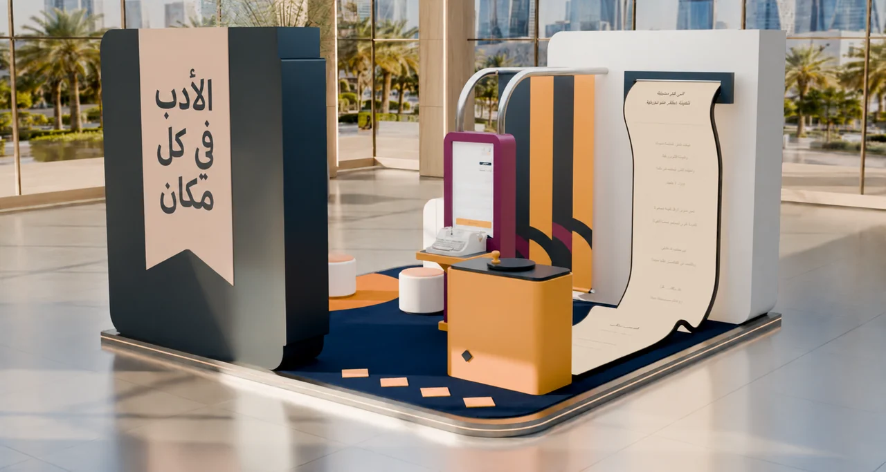

Hanging text layers
Editable Blender scenes and multiple render views document the visualization workflow.
A story with room to unfold.
Explore the story
Translate reading and listening into a coherent spatial composition.
Hanging text, a curved story surface and a compact station create several scales of attention. Warm lighting connects these graphic and architectural elements.
Editable Blender scenes and multiple render views document the visualization workflow.
The scene also uses photographic backgrounds and reusable material resources; those components need separate credits.
The imagery brings together hanging text, a curved story surface and a compact interaction station.
Explore the complete compositions and interface states. Select any image for a closer look.
Structure, interaction and visual decisions that give the work its character.
RoleConfirm scene design, custom geometry, procedural scripting and look development.
AssetsDo not describe the entire scene as modeled from scratch. Credit photographic backgrounds, materials, imported objects and AI-assisted scripting separately.
StatusConcept visualization; original component authorship and delivery status unverified.